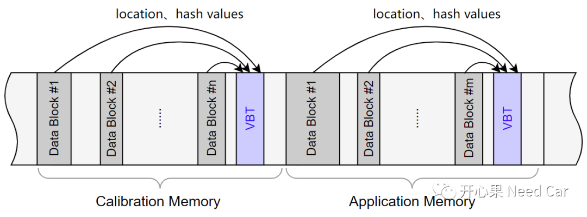
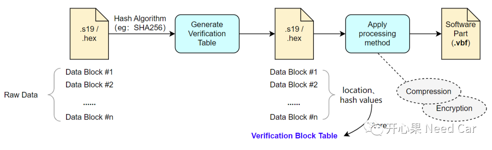
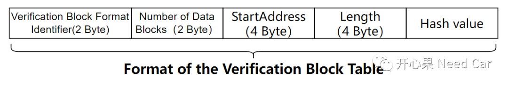
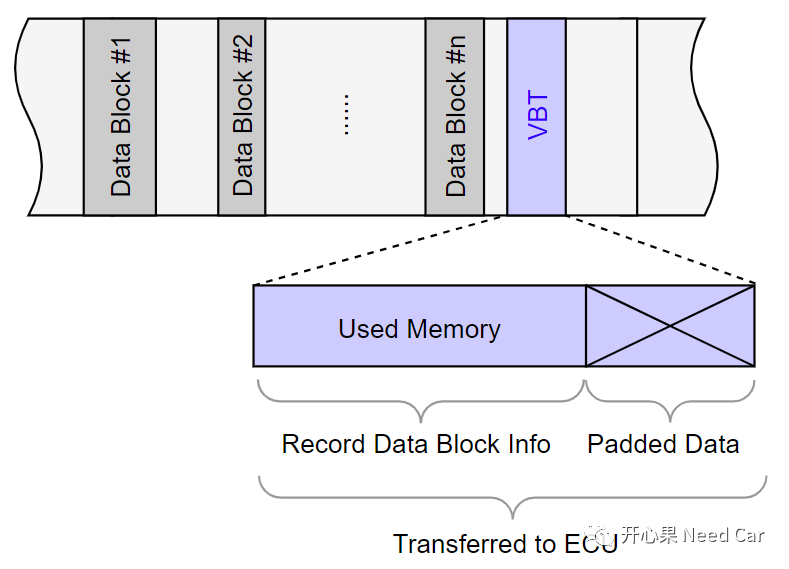
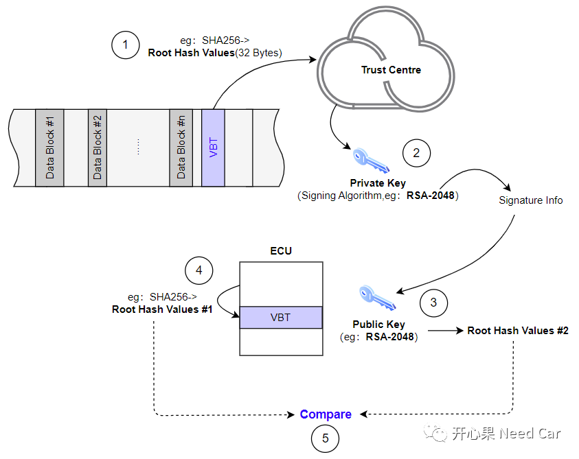
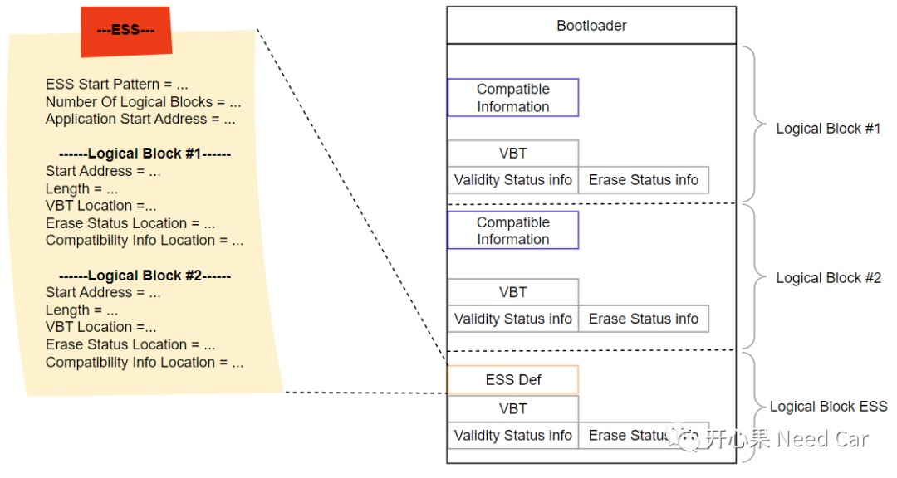
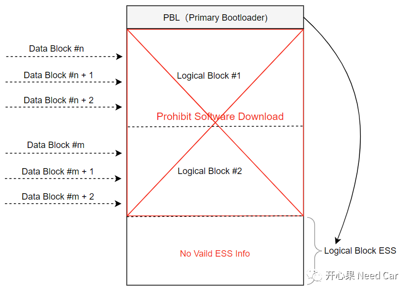
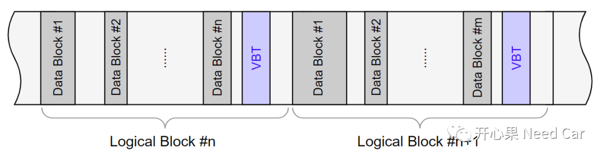

开心果 Need Car · 2023-10-25T09:07:00+08:00 · 微信原文
随着信息安全越来越被重视，汽车软件开发中，信息安全相关知识已然在成为工程师的“标配”技能。如果说，Application程序中，接触到的信息安全需求不多，那么，在Bootloader程序开发中，信息安全的相关需求则见怪不怪。毕竟牵扯到程序升级的话题，或多或少会牵扯到OTA（Over The Air）技术。而OTA技术，又需要车辆联网，既然车辆联网，就存在信息泄露和攻击的风险。本文，聚焦软件升级过程中，软件认证（Software Authentication）的相关知识点梳理。
1、VBT（Verification Block Table）
如果开发过Geely 2.0 BaseTec的小伙伴，对于VBT（Verification Block Table）应该不陌生。什么是VBT呢？它的作用是什么呢？搞软件开发的小伙伴应该清楚，软件程序分为多个部分，eg：Bootloader、Application、Calibration等。当编译器（Compiler）编译程序时，由于程序的不连续性，会使得每个部分包含多个Data Block。为了记录这些Data Block的location（包括数据块的起始地址和长度）以及hash values信息，设计了VBT，示意如下：

所以，VBT就像一个清单（manifest），用于记录每个Data Block的location和hash values，以便于快速验证每个数据块的数据完整性。
（一）VBT的生成阶段
VBT在哪个阶段生成呢？这里需要说明一下，大家在解读需求的时候，可能注意到：每个Data Block的hash values生成是针对原始数据（Raw Data），而不是经过压缩（Compression）或者加密（Encryption）处理后的数据。所以，当软件开发完成后，对原始的每个Data Block进行Hash计算，之后将每个Data Block信息存入VBT，如下所示：

（二）VBT格式
既然VBT用于记录每个Data Block的信息，是以怎样的格式记录信息呢？格式如下所示：

VBT Format Identifier ：表示选用的Hash算法，eg：0x00表示SHA256；
Number of Data Blocks：数据块个数;
Start Address：数据块起始地址；
Length：数据块长度；
Hash Value：数据块对应的Hash值。
（三）VBT对齐问题
VBT一般存储在Flash空间，而Flash的擦除和写操作都有最小限制。所以，这就会涉及到内存对齐（Align）的问题。由于内存对齐问题，VBT存储的信息不足最小对齐空间时，可以对剩余空间进行填充（Padding），示意如下所示：

2、Root hash加密与验证
如上，我们已经知道，VBT会存储每个Data Block的hash values。这样，虽然可以快速验证每个Data Block的完整性，但是，有一个前提：VBT记录的信息是完整且有效的。只有VBT记录的信息是完整的、有效的，再进行每个Data Block的完整性验证才是有意义的。所以，需要先对VBT也进行一次hash计算（eg：使用SHA256计算），生成的hash values称为Root Hash Values。
（二）如何加密和验证Root Hash Values
为了确保VBT的数据完整性，使用Hash算法（eg：SHA256）计算出Root Hash Values。同时，为了确保Root Hash Values不被外部截获，信任中心（Trust Centre）通过私钥（Private Key），使用非对称加密算法（eg：RSA-2048，适用于小数据加密）对Root Hash Values进行加密处理，生成对应的签名信息（Signature Info），当ECU收到签名信息以后，使用Private Key配对的Public Key对签名信息进行解密，得到Root Hash Values #1，同时，对刷写进ECU的VBT内容进行hash计算（eg：使用同样的SHA256算法），算出Root Hash Values#2，通过对比Root Hash Values #1与Root Hash Values #2即可知道VBT的完整性，如果VBT完整，即可进行后续的Data Block完整性验证，示意如下所示：

3、软件验签
（一）验签次数
4、ESS（ECU Software Struct）
ESS（ECU Software Struct），如字面意思：ECU的软件结构，主要用于存储ECU的软件块信息，以便于Bootloader可以快速查找每个软件块信息。在Geely 2.0的规范中，ESS并没有做强制性的细节描述（除了包含一些必要的约束信息，其它信息可以自行定义），在实现上，供应商（Supplier）具有一定的自由度。
ESS的定义示例，如下所示：


（二）本文的Logical Block与Data Block关系
一个Logical Block可以包含多个Data Block，示意如下：

提示：如上的Logical Block不要与芯片手册中的Logical Sector混淆。
往期精彩回顾
如何基于HighTec，在链接文件（*.lsl）中设置自定义段